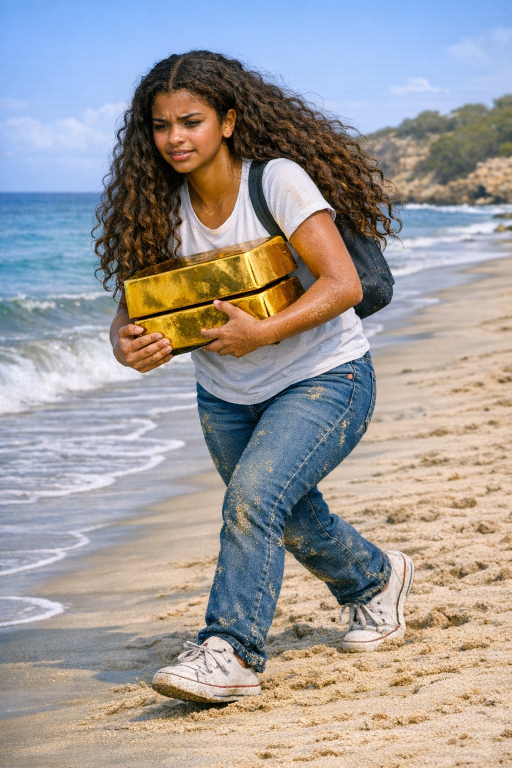

| Brooklyn trudged across the sun‑baked shore, her arms wrapped around a chest of gold so heavy it seemed to hum \with its own gravity. Each step pressed deeper into the sand, the grains swallowing her feet until she could barely move. The treasure glinted in the sunlight, dazzling and cruel, a reminder of how beauty could weigh a person down. The air shimmered with heat, and the horizon blurred into a mirage — a promise of escape that always stayed just out of reach. | |
 |
But Brooklyn refused to stop. She tightened her grip on the chest, feeling the metal burn against her skin as if the gold inside were alive and impatient. The wind carried the scent of salt and something older—something that whispered of promises made long before she was born. With every labored step, she felt the burden shift from her arms to her heart, a reminder that some treasures demanded more than strength to carry. Ahead, the dunes rose like silent watchers, and she pushed toward them, determined to reach the shade they offered before the sun claimed her completely. |